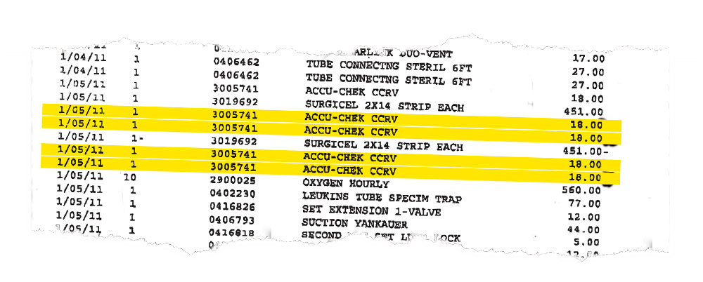
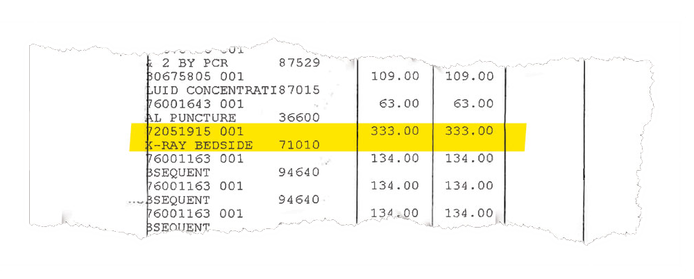
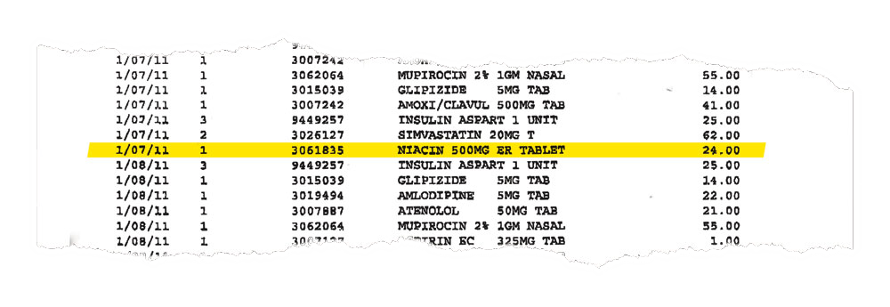

Bringing financial transparency to health care pricing across the nation.
For the first time, Hospital Watch makes it easy for patients, taxpayers, the news media, health providers, community-based organizations, medical billing advocates and other stakeholders to access and understand hospitals' financial and price data. The easy availability of this useful information will support more informed decision making, greater fairness, and more competition in a time when the health care system is being asked to do more with less.
Hospital Watch is searchable and easy to use.
1. Find your hospital.
2. Choose the information you want.
Prices for Services
Includes chargemaster price list for top 3,000 most common charges. Alongside the chargemaster price, see the average amount paid to the hospital by insurance companies and Medicare for the same service.
Availability and Criteria for Financial Aid
Find out what the specific requirements are for financial aid at your hospital, and how much financial aid is available.
Amount of Charity Care Provided
Find out how much charity care is provided by your hospital, with year-by-year comparisons.
Financial Data on Hospital Operations
See intuitive, visual presentations of key data that shows how money flows through the hospital, plus operating profits/losses, with year-by-year comparisons. Complete with educational pop-ups that simplify and explain hospital financial data and help users see the complete picture.
Total Compensation of Highest Paid Executives
See total compensation for your hospital's highest paid executives and employees, with year-by-year comparisons.
3. Print, email, save or send the information to a mobile device.
Hospital Watch makes a difference.
"I was able to negotiate a $4,190 reduction in my outstanding hospital bill using information I found on Hospital Watch." -- Florence Davis, age 62, Winston-Salem, NC

One diabetic patient was charged $18 each for Accu-chek diabetes test strips. A box of 50 costs about $27 on Amazon.com (55 cents each). (Source: TIME)
"I discovered that I was charged a much higher rate for services than I should have been. If it weren't for Hospital Watch, I never would have found out." -- Samuel Teesdale, Dallas, TX

One patient who consulted Hospital Watch was charged $333 for a chest x-ray. The national rate paid by Medicare is $23.83. (Source: TIME)
"After learning about Carolinas HealthCare's profits on Hospital Watch, we voted to end the hospital's $16 million tax-payer subsidy. We badly needed that money to pay for other important city services." -- Jamie Beckett, County Commissioner, Mecklenburg County, NC

One patient was charged $24 per 500-mg tablet of niacin. In drugstores, the pills can be purchased for roughly 5 cents each. (Source: TIME)
"We simply don't have the manpower to dig up and sort through thousands of pages of hospital financial and price information ourselves. Hospital Watch helps us monitor the hospital and serve as community watchdogs." -- Scott Pufflenberg, journalist, Lynchurg Gazette, Lynchburg, VA
Why hospital prices need watching:
the compelling case for transparency.
Steven Brill spent seven months analyzing hundreds of bills from hospitals, doctors, drug companies and medical equipment manufacturers to find out why Americans are paying so much for health care. What he discovered, outlined in detail in his story Bitter Pill: Why Medical Bills Are Killing Us (TIME Magazine, Special Edition, March 3, 2013), radically changed the way many Americans think about our medical institutions. Here is what Brill concludes:
"The health care market is not a market at all. It's a crapshoot. Everyone fares differently based on circumstances they can neither control nor predict. They may have no insurance. They may have insurance, but their employer chooses their insurance plan and it may have a payout limit or not cover a drug or treatment they need. They may or may not be old enough to be on Medicare or, given the different standards of the 50 states, be poor enough to be on Medicaid. If they're not protected by Medicare or protected only partially by private insurance with high co-pays, they have little visibility into pricing, let alone control of it.
"People have little choice of hospitals or the services they are billed for, even if they somehow knew the prices before they got billed for the services. They have no idea what their bills mean, and those who maintain the chargemasters couldn't explain them if they wanted to. How much of the bills they end up paying may depend on the generosity of the hospital or on whether they happen to get the help of a billing advocate. They have no choice of the drugs that they have to buy or the lab tests or CT scans that they have to get, and they would not know what to do if they did have a choice. They are powerless buyers in a sellers' market where the only consistent fact is the profit of the sellers."
Hospital Watch aims to help change this by empowering people with vital information.
Watch Steven Brill explain on YouTube why hospital prices need watching: